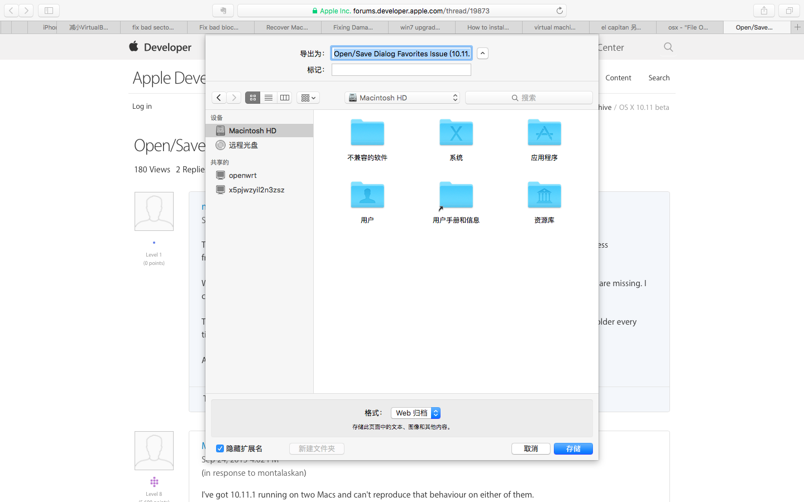

升级El Capitan后打开/存储文件时Finder的个人收藏位置消失？
最近才有时间升级OSX El Capitan，升级后系统响应明显提升，全屏模式下的Split View也非常适合我这样喜欢外接显示器双屏工作的人。可惜一个小小的Bug影响了使用体验：

如上图所示，在任意应用中，如果点击打开文件/存储为…对话框时，Finder的个人收藏位置消失了，每次都要下拉菜单去找文件夹的位置，很影响效率。
在任意应用中打开文件/存储为…，在出现对话框后，随便拖动一个文件夹到对话框的侧边栏中，并点击取消。此后再次出现这些对话框时，侧边栏的个人收藏位置就恢复为以前的设置了。
搜索了很久才找到这个简单又靠谱的好办法，请大家猛击下面的参考链接，去给提问者和回复者upvote吧！
参考文献
[1] Ask Diferent: “File Open” dialog is missing sidebar items